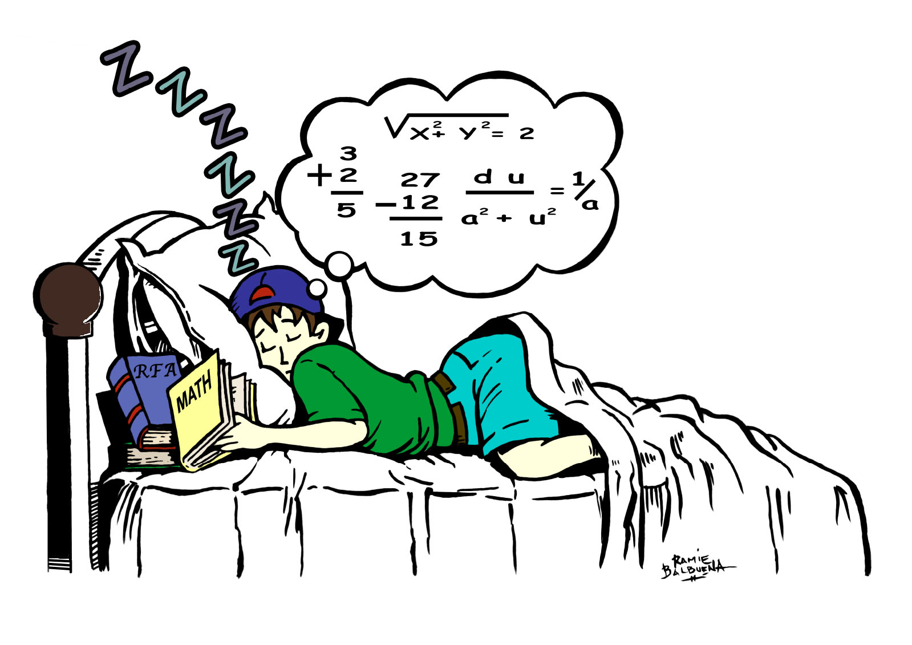
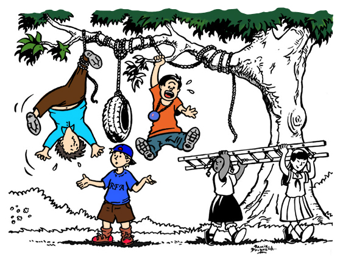
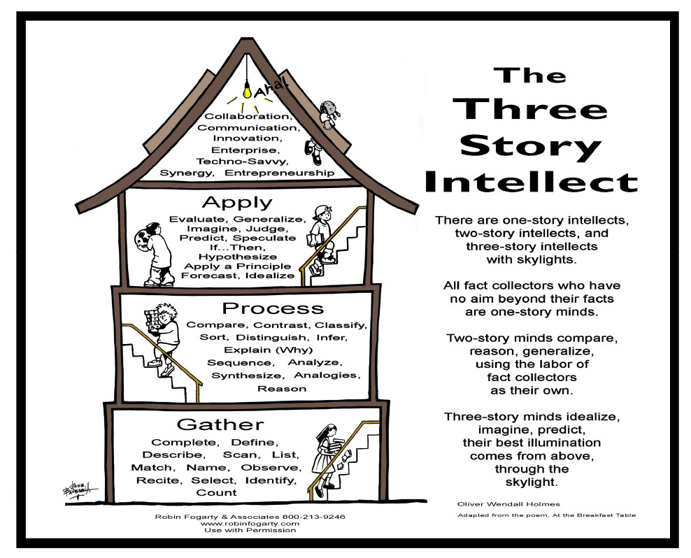
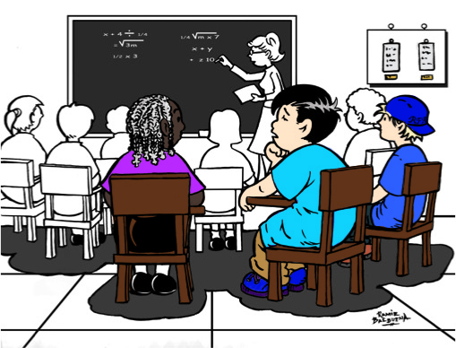

High Tech, High Touch, High Thought
PDF 
Real world application drives 21st Century, academic learning. In this generation, students don’t learn to do they do to learn. They live in a fast-paced society and are impatient with the slow and steady rhythm of the traditional classroom. How do significant curriculum shifts toward a more relevant, rigorous, inquiry-oriented approach occur within this assessment-driven culture? How do teachers guide kids to dig into authentic problems? How do they support “high-tech” applications in a digital-rich classroom? How do they foster collegial, “high-touch” teamwork on projects and papers? How do they challenge students with rigor in “high-thought” explorations, investigations, and experimentations? “The times, they are a changing”, and they are changing at breakneck speed. How do we, as leaders, retool schools to meet the challenges in relevant ways?
- High Tech-Communication
- High Touch-Collaboration
- High Thought-Creative and Critical Thinking
Book: How to Teach Thinking Skills within the Common Core: 7 Student Proficiencies
Testimonial:
Nuggets of info and some great tools . . .the takeaway strategies that can be applied in the classroom immediately w/o a lot of changes to lessons will be all helpful in adding deeper critical thinking. Joey Dale, Middle School.
PBL in a Nutshell
PDF 
It's time to transform instruction with enriched Problem-based Learning in a Nutshell
Here is the big secret about PBL . . . It’s not that complicated! Moving toward relevance
in the curriculum that uses 21st Century, real-world applications, student inquiry models
are front and center-problem-based, project, and service learning experiences are among
the most frequently cited. It’s efffective to get started with tools already familiar to
teachers today: graphic organizers, essential questions, rich and relevant content,
rigorous thinking skills, digital-rich tools for searching and researching, collaborative
team work and presentation skills. Simply put: PBL is like DIY (Do It Yourself) projects-
Do It-to-Learn-It, 21st Century methodology, rather, than Learn It-to-Do-It, 20th
Century traditions.
Objectives and Outcomes:
- Develop Question-Collect, Reflect, Select
- Gather Resources- Search, Research, Network
- Organize Information-Notes, Graphics, Outline
- Create Evidence-Project, Problem-based, Service Learning
- Present Findings-Product, Presentation, Performance
- Assess Learning –Traditional, Portfolio, Rubrics
Book: How to Teach Thinking Skills within the Common Core
Testimonial:
Great job of not being an educational “expert” yet, being an entertaining presenter. Wish more people had you background and experience to share with teachers. Alice McKay, High School English.
Preparing for the Test of Life: Teach Them to Think
PDF 
Using the Three Story Intellect to assure teachers that students are moving through the three levels of thinking-gathering, processing and applying, students learn to think more deeply. As they become more aware of their thinking, confidence increases dramatically, and the shift from the teacher-directed classroom environment to a student-centered culture of respect, responsibility and reliability is the ultimate goal. Learn how to teach kids to think, critically and creatively. Help students begin earlier, rather than later, to adapt self-dispositions of mindfulness that prepare them for test of life. Grounded in 21st Century thinking processes: productive problem solving, mindful decision-making and creative innovation, students develop awareness and control of their own actions, words and deeds. (Can substitute DOK’s or Bloom’s Taxonomy to align to district).
Objectives and Outcomes:
- First Story Thinking-Gather
- Second Story Thinking-Process
- Third Story Thinking-Apply
Book: How to Teach Thinking Skills Within the Common Core
Testimonial:
First and foremost, Robin and Brian, THANK YOU, THANK YOU, THANK YOU! You really provided a new set of eyes for our Instructional Leaders. Your professional learning engagement is literally the TALK OF THE TOWN TODAY! Folks have actually thanked me for PD, which in my world, does not happen all that often!!! Even have Administrators asking for professional books/resources for their toolboxes!!! Talk about "use the next day strategies!" Saw it in action for myself today! Here is how you know that you hit a home run...we held a mini-conference today and the presenters left your session on yesterday and went back and reworked their presentations for today.Marcella Heyward-Evans, EdD Chief Instructional Officer.
Who’s Doing the Talking: Is the Brain Engaged?
PDF 
As part of the compendium of best practices, the idea that the person doing the talking is the person doing the learning seems counter-intuitive. Yet, that is exactly the case. When students are required to put their thoughts into words, to
communicate their ideas to someone else, they are actually internalizing the learning as they struggle to make their emerging thoughts clear. The question, "Who's doing the talking?” is a gentle reminder that students must be actively involved and mindfully engaged in the learning experience for authentic learning to occur. They must dialogue with peers, articulate their ideas in small groups and express themselves clearly in front of the entire class. In turn, these oral language skills translate directly into written language skills.
Objectives and Outcomes:
- Set High Expectations: Motivated with a Growth Mindset
- Challenge Students to Think: Teach Higher Order Thinking
- Require Rigor: Require Complete Sentences, Standard English
- Leave Nothing to Chance-Revisit! Review! Revise! Re-teach!
- Make No Excuses-Encourage At-Risk Participation
- Insist on Results-Emphasize Reading
Book: Closing the Achievement Gap
Testimonial:
It was such a pleasure to see you work with our teachers last week. What a very talented and professional pair you are. I know our district's students will benefit from your shared expertise. I am so glad we found you.- Shelly Smede-Director of Staff Development Idaho Falls, ID.